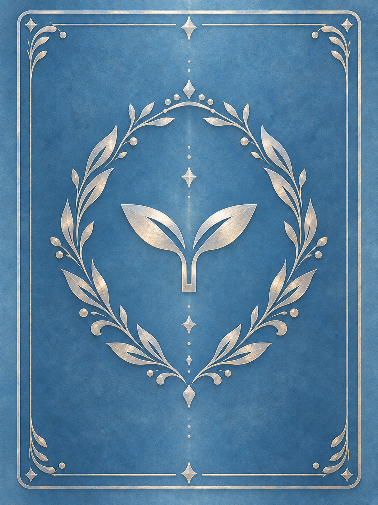

ui-assets/card-back-approved.png

art-pilot/references/approved-card-back.png
画像3:4の縦横比を維持。CSS表示の再現であり対戦画面の撮影ではない。
どちらも1086×1448。RGB / RGBA と圧縮が異なり、RGBAにそろえた全画素は一致。画像自体は無変更。

基準 main: 7c1f18c77b902d06159157899c36104e5d8c4a8d · 2026-10-31